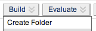
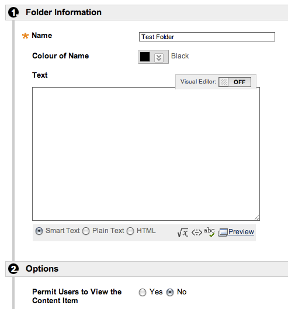
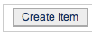
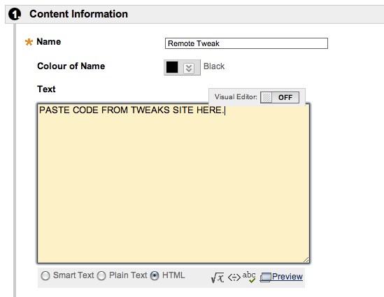

Tweaks: Documentation
Tweaks: Documentation
Trialing a Tweak on your site:
- Select the Tweak to see documentation and a screenshot, then click "Toggle: test code to embed in Blackboard site."
- Copy the text from the yellow box that appears.
- In your Blackboard site, create a test folder not available to students:
- 
- 
- Create a new Blackboard item inside this folder and call it "Remote Tweak". Switch the visual editor OFF (as per image below) and paste in the text you copied.
- 
- 
- Your Tweak should now be ready to use as per the instructions on the main Documentation page.
Note — this is for testing purposes only. If you wish to use it on a live site, participants will need access to the internet to enable the Tweak functionality OR you can install the Building Blocks to run Tweaks locally on your server.